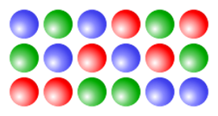
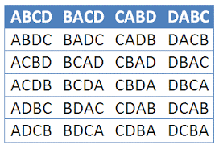
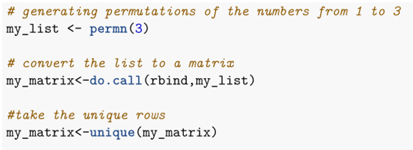
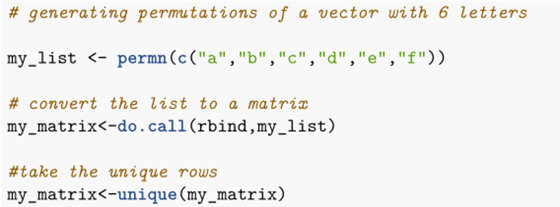
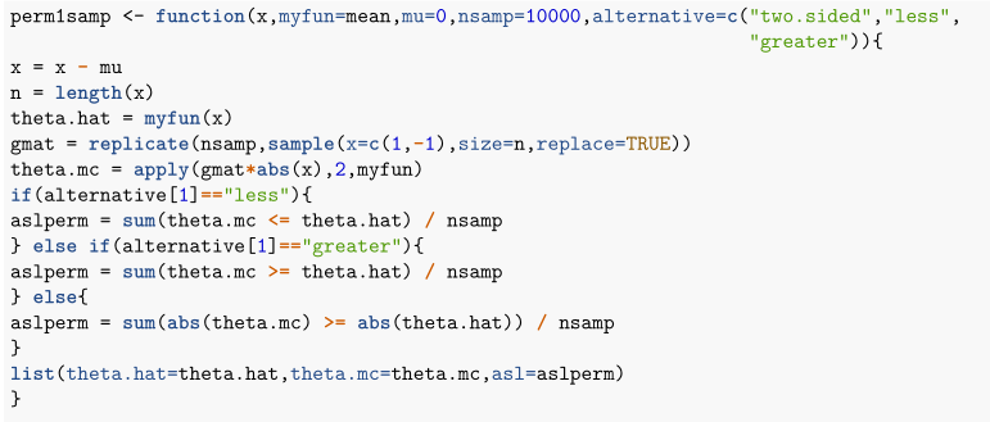
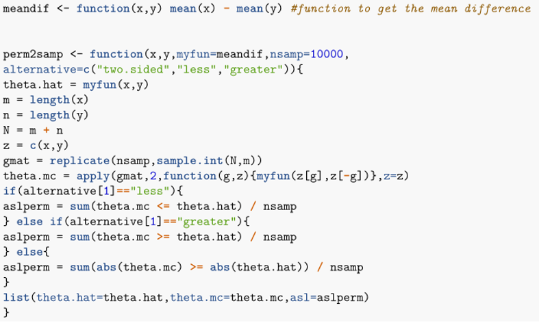
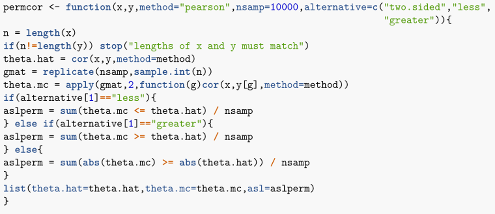

[,1] [,2] [,3]
[1,] 1 2 3
[2,] 1 3 2
[3,] 3 1 2
[4,] 3 2 1
[5,] 2 3 1
[6,] 2 1 3Permutation Tests
Dr. Malima Atapattu
Department of Statistics & Computer Science

Each column is one possible permutation of the three colors.

All possible permutations of the four letters A, B,C, and D.
We can use permn() function in R package “combinat” to obtain all possible permutations of a given vector.
For example, if you want all possible permutations of the vector \([1, 2, 3]\),

All possible permutations as a matrix:
[,1] [,2] [,3]
[1,] 1 2 3
[2,] 1 3 2
[3,] 3 1 2
[4,] 3 2 1
[5,] 2 3 1
[6,] 2 1 3
[,1] [,2] [,3] [,4] [,5] [,6]
[1,] "a" "b" "c" "d" "e" "f"
[2,] "a" "b" "c" "d" "f" "e"
[3,] "a" "b" "c" "f" "d" "e"
[4,] "a" "b" "f" "c" "d" "e"
[5,] "a" "f" "b" "c" "d" "e"
[6,] "f" "a" "b" "c" "d" "e" [1] 720 6Permutation tests do not rely on assumptions about the distribution of the data, as some other tests do.They are therefore considered to be nonparametric tests.
Permutation tests work by resampling the observed data many times in order to determine a p-value for the test. (Different from the bootstrap because there we resample data with replacement but here not.)
Here we estimate the sampling distribution of the test statistic by calculating the value of the test statistic on all possible permutations of the sample.
P-value is calculated as the proportion of permuted datasets that produce a test statistic at least as extreme as the one observed from the actual data.
Permutation tests can only be used for a null hypothesis of ‘no effect’.
If the null hypothesis is true the shuffled data sets should look like the real data, otherwise they should look different from the actual data.
Empirical distribution of test statistic. The red line is the value of the observed test statistic.
Suppose we have some test statistic \(\hat\theta = s(x)\) and suppose that larger values of \(\hat\theta\) provide more evidence against \(H_0\).
Given \(\hat\theta\), the achieved significance level (ASL) of our test is \[ASL = P(\hat{\theta^*} \ge \hat \theta|H_0 \text{ true})\] which is the probability of observing a test statistic as or more extreme than \(\hat\theta\) under the assumption that \(H_0\) is true.
\(X_1, \dots , X_n \overset{\text{iid}}{\sim} F\) if the one-sample situation
\(Z_1, \dots , Z_n \overset{\text{iid}}{\sim} F\) with \(Z_j = X_j-Y_j\) if the paired-sample situation
We want to make inferences about the location of the data.
Let \(\mathbf{g} = (g_1, g_2, \dots , g_n)\) denote the permutation vector denoting which observations are above \(\theta_0 (g_i = 1)\) and which are below \(\theta_0 (g_i = -1)\).
There are \(2^n\) different possible \(\mathbf{g}\) vectors (each \(g_i\) can be \(1\) or \(−1\)).
If \(H_0: \theta = \theta_0\) is true, then \(P(X < \theta_0)=0.5\) by definition.
Under \(H_0: \theta = \theta_0\),
the vector \(\mathbf{g}\) has probability \(1/2^n\) of equaling each of the \(2^n\) different possible outcomes.
The permutation ASL is the permutation probability that \(\hat{\theta}^*\) exceeds \(\hat\theta\): \[ASL_{perm} = \# \text{ of }\{|\hat{\theta}^*_b|\ge |\hat\theta| \}/2^n \quad \quad (\text{for two-sided alternative})\] where \(\{\hat{\theta}^*_b\}^{2^n}_{b=1}\) is the set of all possible test statistics under \(H_0\).
When \(2^n\) is large, forming \(\hat{\theta}_b^*\) for all \(2^n\) possible \(\mathbf{g}\) vectors is computationally expensive. Therefore, a Monte Carlo approach can be used.
Procedure for approximating \(ASL_{perm}\) using Monte Carlo approach:
Randomly sample \(B\) permutation vectors \(\mathbf{g_1^*}, \dots , \mathbf{g_B^*}\).
Evaluate the permutation replication test statistic \(\hat\theta_b^*= s(\mathbf{g_b^*,x})\) where \(\mathbf{x}=x_1, \dots, x_n\) is the observed vector of data.
This assumes that the statistic \(\hat\theta = s(\mathbf{g,x})\) is designed such that larger absolute values provide more evidence against \(H_0\).
re-calculate for each permutation.
Example of an R function for performing a one-sample permutation test:
Now let’s consider several null values and test the hypotheses.
Let \(\mathbf{g} = (g_1, g_2, \dots, g_N)\) denote the permutation vector denoting which observation belongs to which group.
\(\mathbf{g}\) contains \(m\) \(X\)− group labels and \(n\) \(Y\)− group labels.
\(g_i\) denotes group membership of \(z_i\), where \(z_i\) is \(i^{th}\) observation for combined sample of \(N\) observations.
There are \(N \choose n\) different possible \(\mathbf{g}\) vectors.
Under \(H_0: F(z)=G(z)\) for all \(z\), the vector \(\mathbf{g}\) has probability \(\dfrac{1}{N \choose n}=\dfrac{m! n!}{N}\) of equaling each of the \({N \choose n} = \dfrac{N}{m! n!}\) different possible outcomes.
The permutation ASL is the permutation probability that \(\hat{\theta}^*\) exceeds \(\hat\theta\): \[ASL_{perm} = \# \text{ of }\{|\hat{\theta}^*_b|\ge |\hat\theta| \}/{N \choose n} \quad \quad (\text{for two-sided alternative})\] where \(\{\hat{\theta}^*_b\}^{N \choose n}_{b=1}\) is the set of all possible test statistics under \(H_0\).
Procedure for approximating \(ASL_{perm}\) using Monte Carlo approach:
Randomly sample B permutation vectors \(\mathbf{g_1^*}, \dots, \mathbf{g_B^*}\).
Evaluate the permutation replication test statistic \(\hat{\theta_b}^* = s(\mathbf{g_b^*,z})\) where \(\mathbf{z} = (z_1, \dots, z_N)\) is the observed vector of combined data.
Approximate \(ASL_{perm}\) using \(\hat{ASL}_{perm} = \# \text{ of }\{|\hat{\theta}^*_b|\ge |\hat\theta| \}/B\).
This assumes that the statistic \(\hat\theta = s(\mathbf{g,x})\) is designed such that larger absolute values provide more evidence against \(H_0\).
Two common test statistics that can be used are differences of means and differences of medians of the two samples.
Example of an R function for performing a two-sample permutation test:
Suppose we have paired data \((X_i,Y_i) \overset{\text{iid}}{\sim} F\) for \(i = 1, \dots , n\) where \(F\) is some bivariate distribution.
Question: Are 𝑋 and 𝑌 statistically associated with one another?
How can we use a permutation test to answer this question?
Let \(\mathbf{g} = (g_1, g_2, \dots , g_n)\) denote the permutation vector which contains the integers \(\{1, \dots , n\}\) in some order.
There are \(n!\) different possible \(\mathbf{g}\) vectors (orderings of \(y_i\)).
If \(H_0: \rho = 0\) is true, then reordering of \(y_i\) doesn’t affect correlation.
Under \(H_0: \rho = 0\), the vector \(\mathbf{g}\) has probability \(\dfrac{1}{n!}\) of equaling each of the \(n!\) different possible outcomes.
The permutation ASL is the permutation probability that \(\hat{\rho}^*\) exceeds \(\hat\rho\): \[ASL_{perm} = \# \text{ of }\{|\hat{\rho}^*_b|\ge |\hat\rho| \}/n! \quad \quad (\text{for two-sided alternative})\] where \(\{\hat{\rho}^*_b\}^{n!}_{b=1}\) is the set of all possible test statistics under \(H_0\).
When \(n!\) is large, forming \(\hat{\rho}^*_b\) for all \(n!\) possible \(\mathbf{g}\) vectors is computationally expensive. Therefore, a Monte Carlo approach can be used.
Procedure for approximating \(ASL_{perm}\) using Monte Carlo approach:
Randomly sample \(B\) permutation vectors \(\mathbf{g_1^*}, \dots , \mathbf{g_B^*}\).
Evaluate the permutation replication \(\hat{\rho}^*_b = cor(\mathbf{x,y_b})\) where \(\mathbf{x}\) is the observed vector and \(\mathbf{y_b}\) is \(b^{th}\) permuted copy of \(\mathbf{y}\).
Approximate \(ASL_{perm}\) using \[ASL_{perm} = \# \text{ of }\{|\hat{\rho}^*_b|\ge |\hat\rho| \}/B\]
This assumes that the correlation statistic \(\hat\rho = cor(\mathbf{x,y})\) is designed such that larger absolute values provide more evidence against \(H_0\).
Could use any reasonable correlation measure. Popular choices include Pearson, Spearman, and Kendall correlation coefficients.
Example of an R function for performing a correlation permutation test:
Let’s use the same data in previous slide which is from a bivariate normal distribution.
Consider the EuStockMarkets data set in R which provides daily closing prices of four major European stock indices: Germany DAX (Ibis), Switzerland SMI, France CAC, and UK FTSE. Using this data set, test whether there is a significance difference in the closing prices of the SMI and CAC indices. Use a permutation test at 5% level of significance.
Consider the EuStockMarkets data set again and test whether there is an association between the two indices SMI and CAC at 5% level of significance.